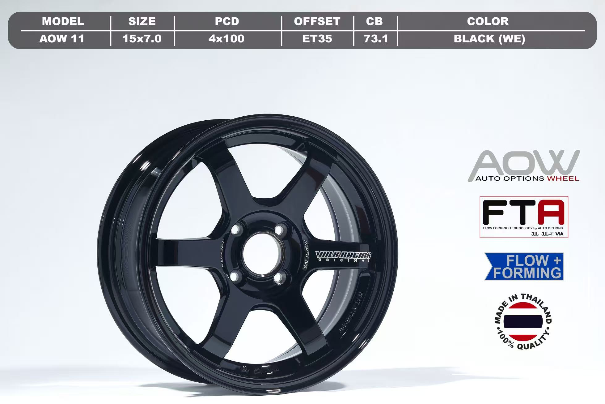

Auto Options Wheel (AOW) AOW 11 15x7.0J | PCD 4X100 | ET35 | CB73.1mm | Black (WE)

RM 2150.00
Auto Options Wheel (AOW) AOW 11 | 15x7.0 | 4x100 | ET35 | Flow Forming Sport Rim Manufactured in Thailand using advanced FTA (Flow Forming Technology), the AOW 11 delivers a lightweight yet high-strength wheel structure certified to JWL and VIA standards. Inspired by the iconic 6-spoke racing design with raised spokes and finished in sleek Black (WE), the 15x7.0 ET35 setup offers improved handling, sharper acceleration, and an aggressive flush-to-fender stance for compact cars. Specifications: • Brand / Model: Auto Options Wheel (AOW) — AOW 11 • Size: 15 x 7.0J • PCD: 4 x 100 • Offset: ET35 (+35) • Center Bore: 73.1mm (Hub-centric rings provided for smaller hub vehicles) • Finish: Black (WE) • Construction: Flow Forming (Made in Thailand) Vehicle Fitment (4x100): • Perodua: Myvi (All Generations), Axia, Bezza, Alza (Old), Viva, Kelisa, Kenari • Proton: Saga (BLM / FLX / VVT), Persona (2016–Present), Iriz, Satria Neo, Wira • Honda: City (GM2 / GM6 / GN2), Jazz (GE / GK), Civic (EG / EK) • Toyota: Vios (NCP42 / NCP93 / NCP150), Yaris, Corolla Altis (Old) • Nissan / Mazda / Suzuki: Almera, Mazda 2, Swift Additional Info: • Price listed is for 1 set of 4 pieces. • Free aluminum center cones (hub rings) included to match your vehicle's exact hub bore. • Professional installation, high-speed wheel balancing, and old rim Trade-in are available at our Klang workshop.
Klang Hock Li Tyre Services Sdn Bhd, Klang, Selangor, Malaysia.
View live product details and enquire